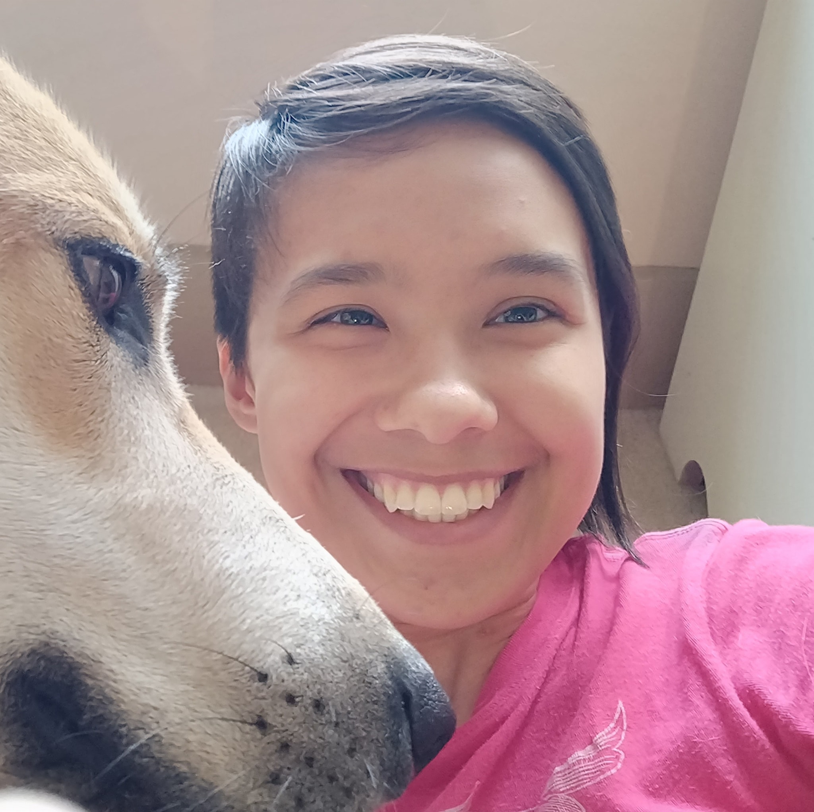

About Me
Since graduating in 2015 with a Digital Media degree from ETSU, I've done a variety of work- both artistic and technical. My first job was at a small business doing photo restoration, video editing, and technical support. I moved to Atlanta in 2018 seeking new opportunities. I currently work as a tutor in a variety of subjects from reading to calculus.
I'm always looking for new things to learn or new problems to solve. In my spare time, I enjoy drawing and SCUBA diving. I love animals and volunteering to work with them.